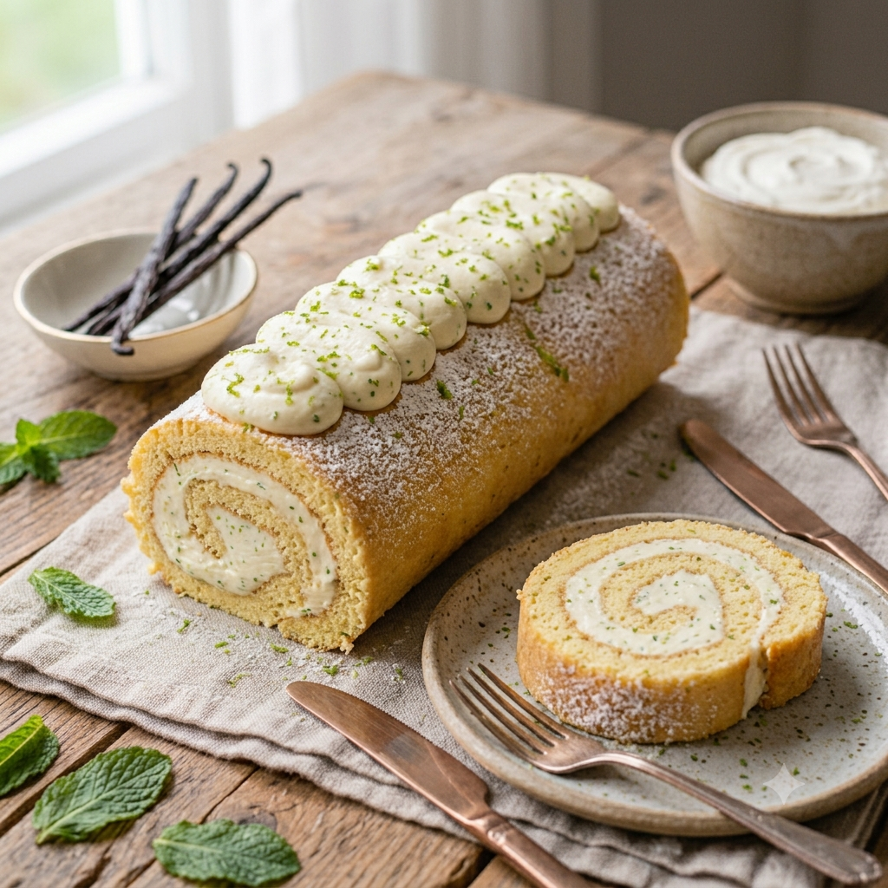

RECETA #020
Brazo Gitano

Ingredientes (8 porciones)
- 4 huevos
- 150 g de harina de trigo
- 1 cda de vainilla
- 1 pizca de sal
- 1 pliego de papel estrella
- 1 paño de cocina
Butter cream
- 1 paquete de queso crema (Philadelphia)
- 200 g de azúcar glass
- 100 g de mantequilla
- 2 cdas de vainilla
- Leche c/s
Procedimiento
Realiza el mise en place.
En dos bowls, separa las claras de las yemas. Monta las claras con una pizca de sal a punto de nieve.
Bate las yemas con la vainilla y el azúcar. Incorpora las claras e integra de forma envolvente con una miserable.
Agrega la harina de trigo dividida en dos tantos. Pon la primera parte e integra de forma envolvente. Repite el paso con la segunda parte de harina.
En una charola para hornear coloca el papel estrella, esparce la mezcla con la miserable sobre todo el papel.
Hornea a 180°C de 10 a 15 minutos aproximadamente. Retira del horno, colócalo sobre un paño, despega el papel del pan y enróllalo en el paño. Deja reposar por 10 minutos. Desenvuelve y coloca el relleno de crema pastelera, crema batida, mermelada o queso.
Enrolla el pan e ve apretando para que no se desenrolle nuevamente.
Pasa a un platón y decora a tu elección. Se puede decorar con azúcar glass, canela, cerezas o frutos.
Butter cream: acrema con la batidora la mantequilla a temperatura ambiente. Agrega el azúcar glass, el queso crema y la vainilla. Bate nuevamente hasta integrar todos los ingredientes.
Si se desea, se puede pintar de los colores de tu preferencia con pintura vegetal comestible. Utilízala para rellenar o decorar tus postres preferidos.
Tiempo de preparación: 50 minutos.